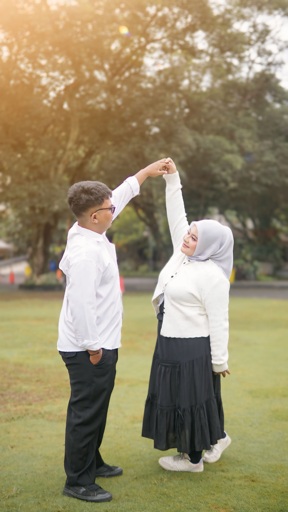
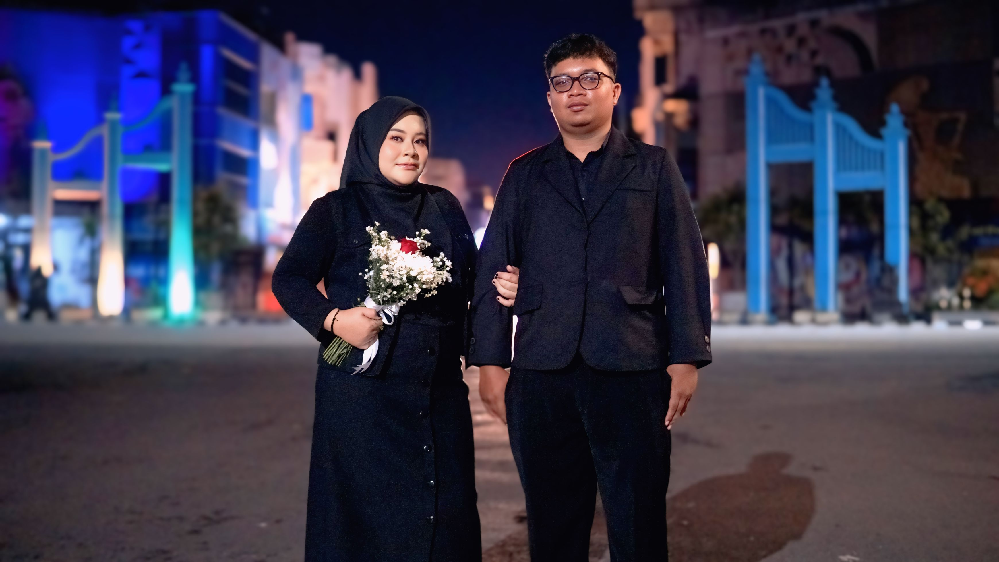
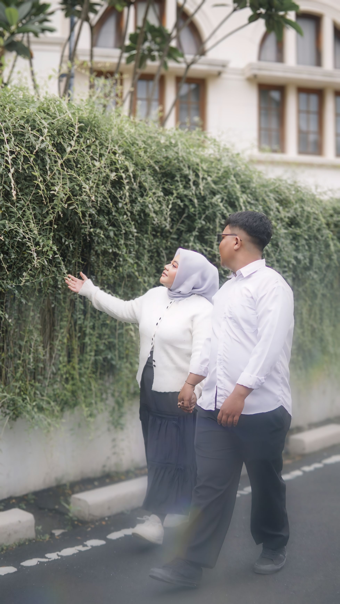
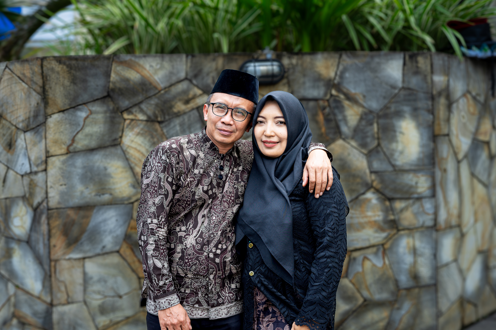
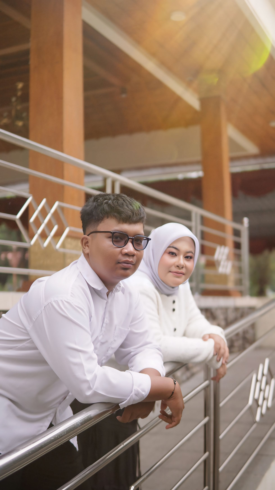
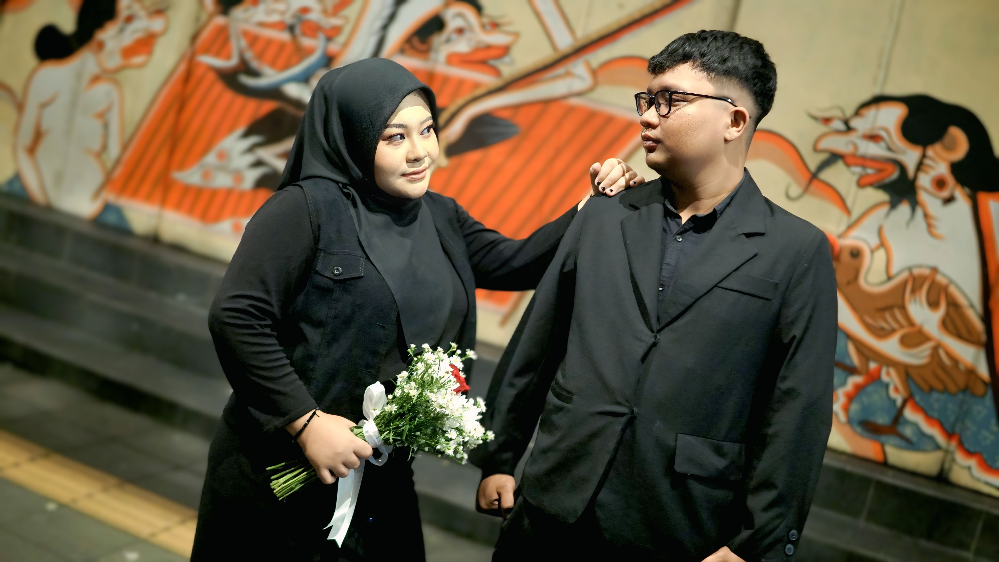

The Wedding of
Lathif & Effy
Kepada Bapak/Ibu/Saudara/i
Tamu Undangan

Kepada Bapak/Ibu/Saudara/i
Assalamu'alaikum Wr. Wb.
Tanpa mengurangi rasa hormat, kami mengundang Bapak/Ibu/Saudara/i serta kerabat sekalian untuk menghadiri acara pernikahan kami:

Putra dari Bpk Sukatmo S.Pd., M.Pd. & Ibu Dwi Nurcahyaningsih S.I.Pust.
Putri dari Alm Bpk Sarno & Ibu Sunarsi
"Dan di antara tanda-tanda (kebesaran)-Nya ialah Dia menciptakan
pasangan-pasangan untukmu dari jenismu sendiri, agar kamu cenderung
dan merasa tenteram kepadanya, dan Dia menjadikan di antaramu rasa
kasih dan sayang."
(QS. Ar-Rum: 21)

Berawal dari sebuah organisasi REMAJA MASJID NURUL HIKMAH yang mempertemukan kami dan membawa kami pada satu tujuan. Kami percaya bahwa setiap detik perjalanan ini adalah bagian dari takdir indah yang telah Allah SWT gariskan.
Melewati berbagai cerita, tepat pada tanggal 22 Februari 2022. Berkomitmen untuk tumbuh serta keinginan untuk terus berjalan berdampingan, menyatukan perbedaan menjadi satu tujuan yang pasti.
Melalui momen lamaran pada tanggal 13 Mei 2025, kami memantapkan langkah untuk saling memiliki. Ini adalah keputusan sadar untuk mengikat janji, memberikan sisa waktu kami hanya untuk satu nama di hari ini dan selamanya.
Di hadapan-Nya, kami meresmikan ikatan suci menuju kehidupan baru. Pernikahan yang dibangun dengan cinta dan doa, awal dari perjalanan panjang yang tak akan pernah berakhir.



10.00 WIB - Selesai
Sabtu, 23 Mei 2026
Gaji, Tubokarto Pracimantoro
09.00 WIB - Selesai
Minggu, 24 Mei 2026
Sunggingan, Lebak, Pracimantoro
Mohon klik tombol di bawah ini jika Anda berencana hadir,
agar
kami dapat mempersiapkan jamuan dengan baik.